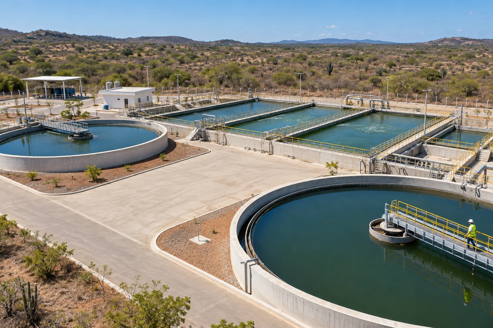
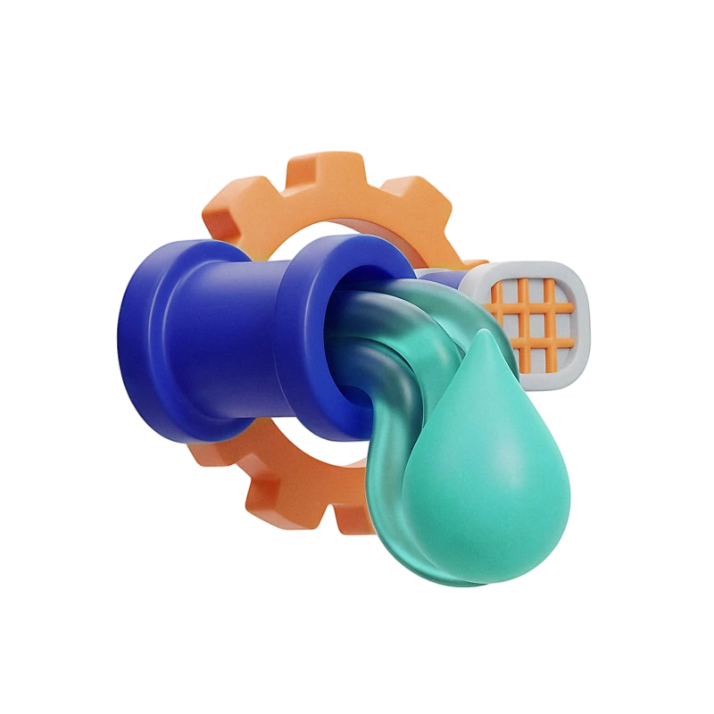
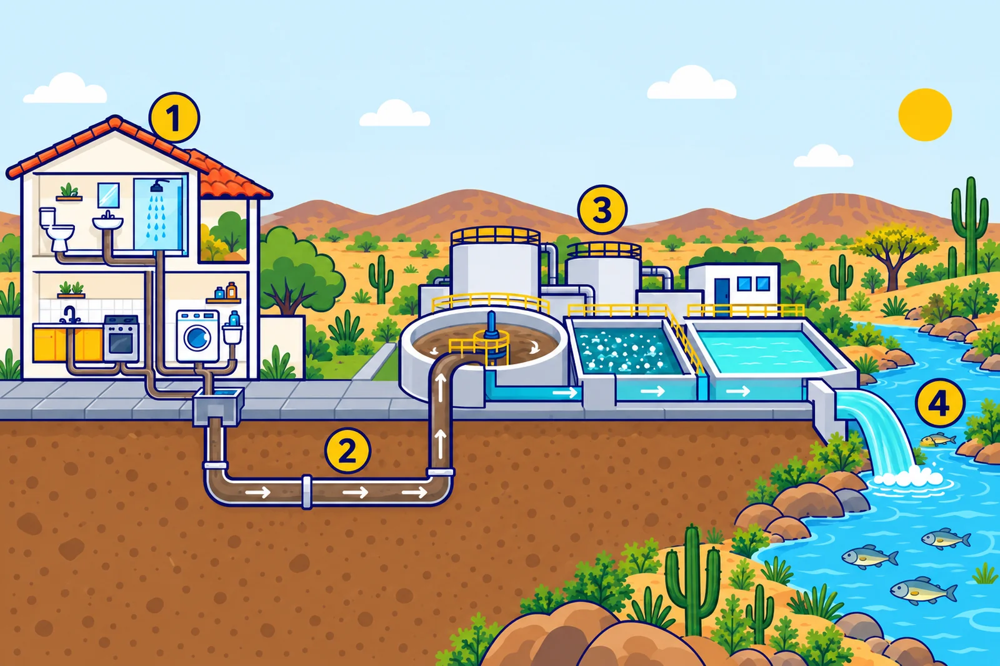
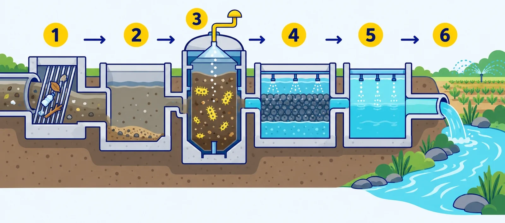

Esgotamento sanitário
Coleta e Tratamento de Esgoto
Infraestrutura e tratamento para proteger a saúde das comunidades e os recursos naturais.


Coleta e tratamento de esgoto
Sistema de coleta e tratamento
O uso diário da água nas atividades domésticas, como no banho, na cozinha, na lavanderia e no banheiro, gera o esgoto sanitário. Sem o devido recolhimento e destinação, esse efluente se torna um risco à saúde pública, pois favorece a proliferação de vetores e agentes causadores de doenças. A implantação e operação de sistemas eficientes de saneamento básico são a principal barreira contra esses riscos.
No contexto do Sertão, o esgotamento sanitário desempenha também um papel crucial na preservação ambiental. O tratamento adequado dos resíduos impede a contaminação do solo, dos lençóis freáticos e dos corpos d’água locais, como açudes, rios e riachos, protegendo a biodiversidade da Caatinga e resguardando as fontes de água essenciais para a região.
Dentro de sua área de atuação, a VITA Sertão gerencia a infraestrutura de afastamento, transporte e tratamento de efluentes por meio de suas redes coletoras e Estações de Tratamento de Esgoto (ETEs). Esse trabalho garante que o esgoto seja devolvido à natureza dentro dos padrões ambientais exigidos.
Com o compromisso de expandir o acesso ao saneamento, a empresa investe no fortalecimento da infraestrutura operacional, na ampliação das redes nos municípios atendidos e na conscientização para a ligação das moradias à rede pública, impulsionando a qualidade de vida e o desenvolvimento sustentável em todo o Sertão.
Coleta de esgoto
Ligue seu imóvel à rede
Coleta de esgoto
Conectar seu imóvel à rede pública de esgotamento sanitário da VITA Sertão representa um passo decisivo para transformar a rotina da sua família e o futuro da sua comunidade. Esse serviço vai muito além do simples afastamento da água servida: ele é sinônimo de prevenção em saúde, desenvolvimento social e respeito ao meio ambiente.
Ao garantir que o esgoto da sua residência receba o direcionamento e o tratamento adequados, você assegura diversos ganhos para o seu dia a dia e para a região:
-
Proteção à saúde das famílias
Redução drástica da incidência de doenças de veiculação hídrica, como verminoses, hepatite A, gastroenterites e infecções de pele, protegendo especialmente crianças e idosos.
-
Erradicação de vetores e mau cheiro
Fim das águas paradas na rua e das fossas irregulares, eliminando odores desagradáveis e o surgimento de insetos, roedores e transmissores de enfermidades (como o mosquito da dengue).
-
Preservação das fontes de água do Sertão
Proteção de açudes, riachos, rios e poços contra a contaminação por efluentes sem tratamento, garantindo a qualidade da água para os múltiplos usos da comunidade.
-
Conservação do solo e do bioma Caatinga
Combate ao extravasamento de resíduos e à poluição do lençol freático, mantendo a vegetação e a terra saudáveis.
-
Valorização do seu imóvel
Residências conectadas a redes oficiais de saneamento contam com maior infraestrutura urbana, o que aumenta seu valor de mercado.
-
Mais higiene e conforto nas ruas
Bairros limpos e sem esgoto a céu aberto proporcionam ambientes mais seguros para o lazer de crianças e o convívio social.
-
Estímulo ao desenvolvimento local
Cidades com saneamento estruturado atraem mais investimentos, impulsionam o turismo regional e geram mais oportunidades de trabalho e renda.
Do seu imóvel de volta à natureza

-
Seu imóvel
O esgoto do banho, da cozinha, da lavanderia e do banheiro sai pela ligação do imóvel à rede pública.
-
Rede coletora
As redes coletoras da VITA Sertão afastam e transportam o esgoto para longe das casas.
-
Estação de Tratamento de Esgoto
Na ETE, o esgoto passa por processos que removem as impurezas orgânicas e químicas.
-
Rios e meio ambiente
O efluente tratado volta à natureza dentro dos padrões ambientais exigidos.
Tratamento do esgoto
Na estação de tratamento
Tratamento do esgoto
Para proteger a saúde pública e a natureza, os efluentes produzidos pela população e pelas atividades produtivas precisam passar por processos adequados de descontaminação. O tratamento de esgoto atua na remoção de impurezas orgânicas e químicas da água servida, permitindo que ela volte ao meio ambiente de forma segura ou seja reaproveitada.
Nas áreas operadas pela VITA Sertão, os sistemas são dimensionados considerando os aspectos geográficos e o clima característico da região.
Exemplo de processo de tratamento
Cada estação é projetada de acordo com o volume de esgoto recebido, as características da área e as exigências ambientais, e diferentes tecnologias podem ser usadas. Veja um exemplo de estação com reator anaeróbio (UASB), em que microrganismos decompõem a matéria orgânica sem precisar de grandes volumes de ar.

-
Gradeamento
Grades retêm o lixo e os materiais maiores que não deveriam estar no esgoto.
-
Desarenação
Areia e pequenas pedras se depositam e são separadas, para proteger os equipamentos.
-
Reator anaeróbio (UASB)
Microrganismos decompõem boa parte da matéria orgânica em ambiente sem oxigênio, e o gás gerado é captado.
-
Tratamento complementar
Lagoas, filtros ou sistemas aeróbios continuam removendo matéria orgânica e outros contaminantes.
-
Desinfecção
Quando prevista, reduz os microrganismos antes da devolução ao rio ou do reúso.
-
Efluente tratado
A água tratada volta ao rio ou é destinada a um uso permitido, como a irrigação, conforme as regras ambientais.
O lodo separado ao longo do processo também é tratado: ele é adensado, desidratado e encaminhado para um destino adequado. As etapas variam conforme a tecnologia de cada estação.